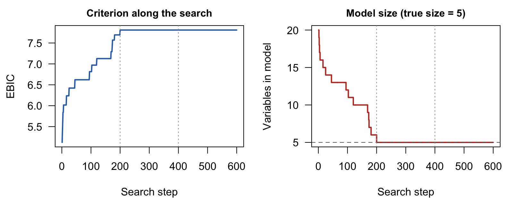

GICHighDimension is an R package for variable selection in high-dimensional regression. It searches over subsets of predictors for the one that maximizes a generalized information criterion (GIC), such as AIC, BIC, EBIC or GIC2–GIC6, using a fast Hopfield-network style coordinate search. Univariate and multivariate responses are supported, along with the common generalized linear model families.
The search engine is written in Julia and called from R through JuliaCall. It never forms the hat matrix: every proposed move is scored with a rank-one update, so a pass over thousands of candidate predictors takes milliseconds. The method is described in Xiao and Walker (2026).
Installation
Install the development version of GICHighDimension from GitHub:
devtools::install_github("yuchenxiao95/GICHighDimension")You also need Julia (≥ 1.9), which you can download from https://julialang.org/downloads/. Then connect R to Julia; the first time, also install the Julia packages the package uses:
library(GICHighDimension)
setup_julia()
install_julia_packages() # first time onlyExample
Simulate data with 200 candidate predictors, 5 of them active, and select variables with EBIC:
set.seed(1)
n <- 300; p <- 200
X <- matrix(rnorm(n * p), n, p)
beta <- c(2, -1.5, 1, 1, -1, rep(0, p - 5))
Y <- LP_to_Y(X, beta, family = "Normal")
fit <- GICSelection(X, Y,
Initial_Column = 1:20,
Calculate_GIC = "Calculate_EBIC",
Calculate_GIC_short = "Calculate_EBIC_short",
k = 50, Nsim = 3
)
sort(fit$selected_coeffs[[length(fit$selected_coeffs)]])
#> [1] 1 2 3 4 5The search starts from 20 variables, removes the 15 noise variables and keeps the 5 true ones within its first pass over the predictors (each dotted line marks a new pass):

For the available criteria and response families, see the Get started article, vignette("get-started").